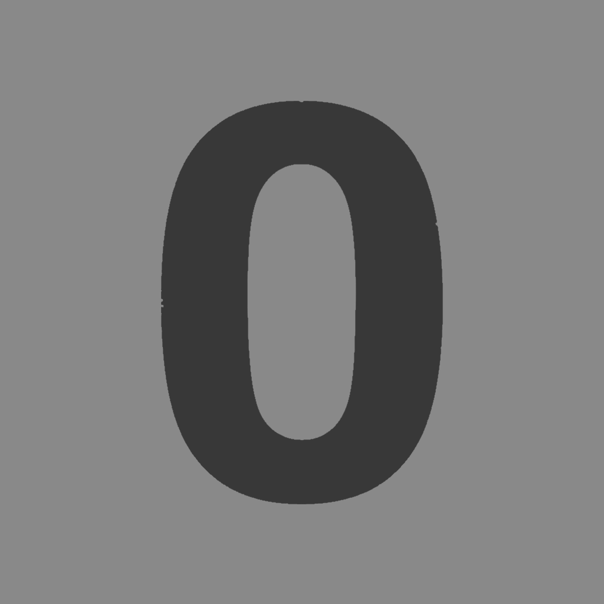

Case study / Moderation system
Unk0wn
One focused toolkit for the everyday work of running a Discord community.

The project
Moderation without the tool sprawl.
Unk0wn is designed for small to medium-sized Discord servers that need dependable moderation and support features without stitching several bots together. It combines routine staff workflows in a single command-driven experience.
Core features
What it handles.
- Auto-moderation
- Moderation tools
- Ticketing
- Levelling
- SQLite-backed logging
- Guided setup
Command surface
Selected slash commands.
/setup-helpWalk through initial bot setup./loggingEnable or disable server logging./createlogsCreate the required log category and channels./automod-settingsConfigure automatic moderation./kick · /banTake moderation action with a recorded reason.
Try the bot
Add Unk0wn to a server.
Review Discord’s permission screen before authorising the bot.
Invite Unk0wn ↗